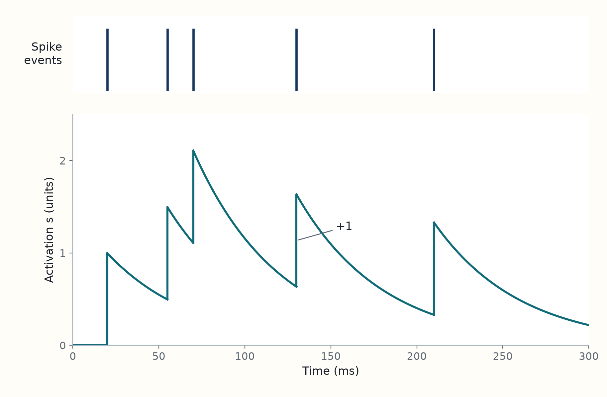
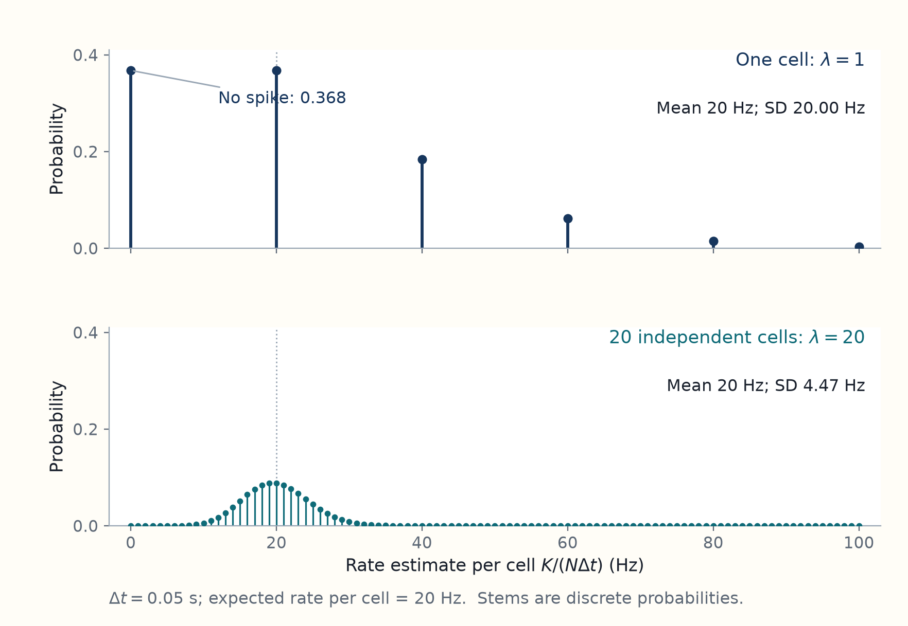

1 Patterns of variable spikes can represent a value
Introduce the question and steady-state equation in the 2012 paper, then explain eye mechanics, the neural model brought forward from Methods, spike statistics, and a preview of its simulations.
[Paper 2012: Introduction and Results, pp. 1–2] Burak and Fiete (2012) ask how accurately a network of interacting neurons can retain a continuous value, such as an eye position or a direction, when its neurons emit spikes at variable times. The paper takes a continuous attractor model as its starting point. Its contribution is to calculate how spike variability makes the stored value wander, and how that wandering is related to the information available in the network’s spikes. For an effectively constant local diffusion coefficient \(D\) and negligible systematic drift, the represented value has mean squared displacement approximately \(2Dt\) over a suitable time interval \(t\). The paper’s information–diffusion inequality is \(D\ge 1/(2\tau^2J)\), where \(J\) is the internal Fisher information rate in the network’s spikes and \(\tau\) is the common synaptic decay time. These are results for the authors’ specified noisy continuous-attractor model, not universal bounds on every memory circuit. Read the introduction and Results setup.
[Interpretation] Imagine the network holding an eye angle \(\theta\) after a cue disappears. Neuron \(i\) emits spikes at a firing rate \(r_i\), the expected number of spikes per unit time. Each spike increases its outgoing synaptic activation \(s_i\), which then decays. The weighted activations from the network determine each neuron’s input and thus its firing rate. This feedback can maintain an activity pattern that represents the angle.
[Derivation: preview of the paper’s bound] At a fixed represented value \(\theta\), write \(\bar r_i\) for cell \(i\)’s noise-free steady firing rate and \(r_i'=d\bar r_i/d\theta\) for its slope. Let \(v_i\) measure the lasting change in \(\theta\) caused by one unit of activation disturbance in cell \(i\) after the other disturbances relax. A unit change in \(\theta\) changes the steady activations by \(\tau r_i'\); the projection must therefore obey \(\sum_i\tau v_i r_i'=1\). The steady-state relation used here is derived just below.
Conditional Poisson spike fluctuations have variance \(\bar r_i\,dt\) over a short interval \(dt\). Their independent contributions give
\[ 2D=\sum_i v_i^2\bar r_i. \]
For positive rates, a Poisson count \(n_i\) in a fixed-state window \(h\) has mean and variance \(h\bar r_i\). Its log probability and score are
\[ \log p(n_i\mid\theta)=n_i\log(h\bar r_i)-h\bar r_i-\log(n_i!), \qquad S_i=\frac{r_i'}{\bar r_i}(n_i-h\bar r_i). \]
Differentiating the log probability gives the score \(S_i\). Since the count variance is \(h\bar r_i\), its expected squared score is
\[ E[S_i^2]=h\frac{(r_i')^2}{\bar r_i}. \]
Independent counts add, so the internal information per unit time is
\[ J=\sum_i\frac{(r_i')^2}{\bar r_i}. \]
Cauchy–Schwarz applied to the two vectors with entries \(v_i\sqrt{\bar r_i}\) and \(r_i'/\sqrt{\bar r_i}\) then gives
\[ \frac{1}{\tau^2} =\left(\sum_i v_i r_i'\right)^2 \leq\left(\sum_i v_i^2\bar r_i\right) \left(\sum_i\frac{(r_i')^2}{\bar r_i}\right) =2DJ. \]
For \(J>0\), rearranging gives \(D\geq1/(2\tau^2J)\). This preview assumes the stable continuous family, weak fluctuations, a common synaptic time constant and independent Poisson spike generation conditional on the current rates. Chapters 3 and 5 derive the lasting-shift weights and information rate instead of taking them as starting points.
[Paper 2012: Results setup, Eq. 1, p. 2] In the idealized noise-free model, each value \(\theta\) corresponds to a persistent pattern across the neurons. For neuron \(i\), \(\bar s_i(\theta)\) is its steady synaptic activation and \(\bar r_i(\theta)\) its steady firing rate. The bar means a steady value in the noise-free model; it does not mean a time average of a noisy trajectory. The paper states the condition for this family of states as
\[ \bar s_i(\theta)=\tau\phi\!\left(\sum_j W_{ij}\bar s_j(\theta)+b_i\right)=\tau\bar r_i(\theta).\qquad\text{(Burak and Fiete, Eq. 1)} \]
Here \(W_{ij}\) is the strength with which neuron \(j\) affects neuron \(i\), \(b_i\) is a constant input to neuron \(i\), \(\phi\) converts its total input into a firing rate, and \(\tau\) is the synaptic decay time. The sum collects input from the network. The equation says that, at each steady state, activation lost by decay is balanced by the activation supplied by firing. The next sections explain these quantities and how the model obtains this balance; the original Eq. 1 precedes the paper’s analysis of noise.
[Derivation: steady states] The relation follows from balancing decay against the mean effect of new spikes. Over a short interval \(dt\), neuron \(i\)’s activation changes by \(ds_i=-s_i\,dt/\tau+dN_i\), where \(dN_i\) counts its new spikes. At the current state, the expected spike count is \(E[dN_i\mid\mathbf s]=\phi(g_i)dt\) to leading order, with input \(g_i=\sum_j W_{ij}s_j+b_i\). Thus the deterministic rate of change obtained by averaging the spike increment at that state is
\[ \frac{E[ds_i\mid\mathbf s]}{dt}=-\frac{s_i}{\tau}+\phi\!\left(\sum_jW_{ij}s_j+b_i\right). \]
At a noise-free steady state the right-hand side is zero. Multiplying by \(\tau\) gives \(\bar s_i=\tau\phi(\sum_jW_{ij}\bar s_j+b_i)=\tau\bar r_i\), which is Eq. 1. This is a conditional local drift calculation; it does not replace the average of a nonlinear function by the function of the average across noisy trials. The detailed spike and input equations follow in this chapter.
[Interpretation] A family of steady patterns gives the network different values it can hold. It does not by itself guarantee that noisy spikes leave the chosen value unchanged. Chapter 2 explains this distinction. This chapter first gives the eye and neuron background needed to read the model, then brings forward the model equations from the paper’s Methods and explains the spike statistics. A simulation example previews the later test of the diffusion result, and a final section connects the statistics to the eye paper.
1.1 Repeated spikes maintain eye muscle tension
[Background: eye muscles and neurons] For the eye to stay directed at a target, its muscles must keep exerting force after the movement command ends. The following anatomy and mechanics prepare us for the neural model; Burak and Fiete (2012) do not derive them.
A neuron communicates through brief electrical events called spikes. A firing rate is the expected number of spikes per unit time. A rate of 20 hertz means an average of 20 spikes per second under the specified conditions, rather than a promise of one spike every 50 milliseconds.
Anatomy: muscles turn the eyeball. In humans and macaques, the eyeball rotates within the bony eye socket, or orbit. The six extraocular muscles attach to the outside of the eyeball and control its orientation. The medial rectus pulls it toward the nose; the lateral rectus pulls it away. The superior and inferior rectus and the two oblique muscles contribute to vertical movement and rotation about the line of sight. Their actions depend on the eye’s orientation.1
Ocular motoneurons (OMNs) are neurons that activate these muscles through long nerve fibres. Their cell bodies lie in brainstem groups, and these fibres travel through three cranial nerves. The abducens nerve, VI, supplies the lateral rectus; the trochlear nerve, IV, supplies the superior oblique; the oculomotor nerve, III, supplies the other four. For horizontal gaze, changing the relative pull of the medial and lateral rectus rotates the eye. A force’s turning effect is its torque. Opposing torques can balance even while the muscles remain under tension.2
Repeated spikes maintain tension. Each motor spike affects muscle force for longer than the electrical event lasts. Repeated activation and the combined action of many muscle fibres give a smoother force than a sequence of isolated eye movements. Tonic firing means sustained firing during the holding period. It need not be perfectly periodic. During a rapid repositioning movement, called a saccade, a brief strong drive moves the eye; a sustained position-dependent drive then holds the new angle. This is the pulse-and-step description: the step means continuing drive, not one more spike.34
The mechanical properties contribute in different ways:
- Elasticity creates restoring forces when muscles and surrounding tissues are stretched. At an off-centre gaze angle, active muscle torque must balance the restoring tendency.
- Viscosity resists motion and dissipates mechanical energy. It damps rapid changes but supplies no holding torque once velocity is zero.
- Inertia is resistance to a change in angular velocity. It matters during acceleration, not as a force holding a stationary eye. In primate eye movements, elastic and viscous effects dominate inertia.5
[Interpretation: holding the eye] Mechanical damping smooths movement; sustained neural drive selects the angle around which the eye is held. Inertia cannot preserve a stationary gaze against an unbalanced elastic pull.
So far we have followed the output from motor neurons to muscles. The next step is a model of how neurons act on one another and sustain a signal.
1.2 Recurrent spikes renew decaying synaptic activity
[Interpretation] How can brief spikes maintain a state for much longer than a spike lasts? In the paper’s model, each spike leaves a synaptic activation that decays gradually. Incoming activations determine new firing rates. The resulting spikes renew those activations. This feedback can support activity after the external stimulus has ended.
[Background] Neurons affect one another through connections called synapses. In the models used here, inputs have two contrasting effects:
- An excitatory input increases a receiving neuron’s tendency to fire.
- An inhibitory input reduces it.
[Interpretation] The effect of a spike can last beyond the spike itself because synaptic input decays over time. When neurons send signals back into the same population, the circuit has recurrent connectivity. Such feedback can maintain activity after an external signal disappears.
[Paper 2012] Burak and Fiete (2012) specify the following interacting-neuron model in Materials and Methods, Eqs. 7–9, PDF p. 5. The model assumes fixed connection weights, constant input biases and a common synaptic decay time. Its three rules describe a chain from spikes to synaptic activation, then to input and firing rate:
-
Spike effects decay and are renewed by spikes:
\[\dot s_i=-s_i/\tau+\sum_\alpha\delta(t-t_i^\alpha).\]
-
The network combines those effects into input:
\[g_i=\sum_jW_{ij}s_j+b_i.\]
-
A transfer function maps input to firing rate:
\[r_i=\phi(g_i).\]
Here \(s_i\) is the effect of spikes from neuron \(i\), \(t_i^\alpha\) are their times, \(g_i\) is total input, \(W_{ij}\) is the effect of neuron \(j\) on neuron \(i\), \(b_i\) is the fixed bias, and \(\phi\) converts input to the firing rate \(r_i\). Spikes follow the model’s conditional Poisson rule, explained in the spike-count section. Each equation and its meaning follow immediately below.6
[Interpretation] These equations describe synaptic activity; muscle motion is a later part of the pathway.
[Paper 2012] Equation 7. The synaptic activation \(s_i\) tracks the decaying effect of neuron \(i\)’s outgoing spikes on receiving cells. The dot means \(\dot s_i=ds_i/dt\), and \(\tau\) is the decay time in seconds. The index \(\alpha\) numbers the spikes of neuron \(i\), with spike \(\alpha\) occurring at time \(t_i^\alpha\). The Dirac delta \(\delta(t-t_i^\alpha)\) represents an instantaneous unit pulse at that spike time; its integral across that time is one. The paper writes the activation dynamics, PDF p. 5, as
\[ \dot s_i+\frac{s_i}{\tau}=\sum_\alpha\delta(t-t_i^\alpha). \]
[Interpretation] Between spikes, the right-hand side is zero and activation decays. Integrating through one spike gives a one-unit increase in \(s_i\). Read Eq. 7 as a balance: spikes add activation, while the term \(s_i/\tau\) removes it. Original Eq. 7, PDF p. 5.
[Derivation] Equivalent count form. Let \(N_i(t)\) count neuron \(i\)’s spikes up to time \(t\). Integrating the pulse train counts the spikes, so the same dynamics can be written as
\[ ds_i=-\frac{s_i}{\tau}\,dt+dN_i(t). \]
Equivalently, if its spikes occur at times \(t_i^\alpha\),
\[ s_i(t)=\sum_{t_i^\alpha\le t}\exp[-(t-t_i^\alpha)/\tau] \]
once the contribution from any activation present at the starting time has decayed. The sum includes a spike at time \(t\), so it gives the activation immediately after that spike. Here \(s_i\) is dimensionless in the convention that each spike adds one unit.
[Example] For five illustrative spike times, the plot shows the events and the activation they leave behind.

[Interpretation: activation and connections] The activation retains a decaying contribution from earlier spikes, so a spike train and its activation trace are different objects.
The connection-matrix explanation establishes why the model needs these interactions.
[Paper 2012] From activation to new spikes: Equations 8 and 9. The total input \(g_i\) to neuron \(i\) combines the activation arriving from other cells with a constant input bias \(b_i\). The fixed connection weight \(W_{ij}\) says how the activation of neuron \(j\) affects the input to neuron \(i\) (Eqs. 8–9, PDF p. 5):
\[ g_i=\sum_jW_{ij}s_j+b_i.\qquad\text{(Burak and Fiete, Eq. 8)} \]
[Paper 2012] The neural transfer function \(\phi\) converts total input into a nonnegative firing rate \(r_i\), in spikes per second. This is Eq. 9, PDF p. 5:
\[ r_i=\phi(g_i).\qquad\text{(Burak and Fiete, Eq. 9)} \]
[Interpretation] These equations specify how the input sets the rate; they do not prescribe each spike’s time.
[Example] Increasing input might increase firing linearly over some input range, or exponentially. The paper allows general connectivity and transfer functions at first (Model, Eqs. 7–9, p. 5).7
[Interpretation: recurrent feedback] A spike from cell \(j\) raises \(s_j\) by one and therefore changes the input to cell \(i\) by \(W_{ij}\). That contribution then decays over time \(\tau\). For an increasing transfer function, a positive weight raises the receiving cell’s rate and a negative weight lowers it. The resulting new spikes affect other cells in turn. Thus the weights set where a disturbance goes, the transfer function sets the rate response, and \(\tau\) sets how long each synaptic contribution lasts. The input \(g_i\) is in the model’s input units. It is not specified as a measured membrane voltage.
Together, Eqs. 7–9 describe one feedback cycle: spikes change synaptic activation, weighted activation changes input, and input changes the rate of new spikes. The next question is how the resulting pattern of rates can represent an eye angle or location.
1.3 Patterns of firing rates represent a value
[Background] A tuning curve gives a neuron’s expected firing rate as a function of a represented variable. The linear eye-tuning example here draws on the 2022 eye paper; it is not an equation from the 2012 article. For eye angle \(\theta\), a simple local model is \(r_i(\theta)=r_{i,0}+k_i\theta\). Neuron \(i\) has baseline rate \(r_{i,0}\) in spikes per second and slope \(k_i\) in spikes per second per degree. This rate baseline is different from the input bias \(b_i\) in Eq. 8. The linear expression can describe an active range, but it must be modified where it would predict negative firing. The eye paper includes a firing threshold and terms for movement as well as position.8
[Paper 2012] The 2012 model represents a value by a pattern across neurons; see its Results setup and Fig. 1, PDF p. 2. Cells can have different tuning curves. The vector
\[ \mathbf r(\theta)=\bigl(r_1(\theta),\ldots,r_N(\theta)\bigr) \]
is a population code: the pattern across \(N\) neurons carries information about \(\theta\). The position of a cell in this vector is a neuron identity, rather than a location in physical space. Reading a value from observed spikes is decoding. Establishing a population pattern from an input is encoding. The 2012 paper asks how accurately the network can maintain such a pattern using its own noisy activity.
[Background] Spatial tuning gives a second example. This discussion draws on Mainali and colleagues (2025), not on the 2012 memory model. In the hippocampus, a brain structure involved in memory and navigation, a place cell fires strongly in one or more localized regions of an environment. A connected region of elevated spatial firing is a place field. One neuron can have several fields. A rate map estimates the rate at each position by dividing the spikes recorded there by the time spent there. Sparse visits, smoothing, and firing cutoffs therefore affect the estimated map and its fields. A field in a model’s expected rate and a field extracted from finite recordings are related objects with different measurement uncertainties.9
[Background] The hippocampal areas CA3 and CA1 contain place cells, but their connections differ:
- CA3 supplies major input to CA1 and has substantial recurrent excitation.
- CA1 also receives input from entorhinal cortex and has much less local recurrent excitation.
[Background] A grid cell, found in entorhinal cortex, has repeated spatial fields that often form an approximately hexagonal pattern in a two-dimensional arena. These repeated grid fields and a place cell’s irregular multiple fields should be kept distinct. A model explaining CA1’s output maps need not identify where the animal’s position estimate is maintained.10
1.4 A variable spike count at a fixed rate
[Paper 2012] A tuning curve describes expected activity, but a brief spike observation can differ each time the same value is represented. The 2012 model, Materials and Methods, PDF p. 5, uses a Poisson rule for spike generation: conditional on the current network state, neuron \(i\) emits a spike in a sufficiently short interval \(dt\) with probability \(r_i(t)dt+o(dt)\). Spike generation is independent between neurons conditional on their current rates. The rate itself changes with the recurrent input, so this rule does not make complete spike trains independent.
[Background] For a predetermined rate function, a Poisson process has independent spike counts in disjoint intervals; in a short interval, the probability of a spike is approximately the rate multiplied by the interval’s duration. In the recurrent model, the rate depends on network activity; the qualification about whole spike trains appears below.
[Derivation] For a constant rate \(r\), the Poisson assumption gives the following law for the number \(K\) of spikes in an interval of length \(\Delta t\):
\[ \Pr(K=k)=e^{-\lambda}\frac{\lambda^k}{k!}, \qquad \lambda=r\Delta t, \qquad k=0,1,2,\ldots . \]
[Derivation: the count law] Divide the interval into \(n\) independent short bins, each with spike probability \(\lambda/n\), where \(\lambda=r\Delta t\). For fixed \(k\), the chance of spikes in exactly \(k\) bins is \(\binom nk(\lambda/n)^k(1-\lambda/n)^{n-k}\). As \(n\) grows, \(\binom nk/n^k\to1/k!\) and \((1-\lambda/n)^{n-k}\to e^{-\lambda}\), giving the displayed Poisson formula. The longer derivation below shows these limits and the mean and variance step by step.
[Interpretation] Here \(\lambda\) is an expected count, so it has no units. For this distribution,
\[ \mathbb E[K]=\lambda, \qquad \operatorname{Var}(K)=\lambda. \]
Derivation: where the Poisson count formula and its variance come from
[Derivation] From random spike times to a count. Hold the rate \(r\) fixed over the observation of length \(\Delta t\). Divide that observation into \(n\) short bins of width \(\delta t=\Delta t/n\). Approximate each bin by one independent spike-or-no-spike trial, with spike probability
\[ p=r\delta t=\frac{\lambda}{n},\qquad \lambda=r\Delta t. \]
Take \(n\) large enough that \(p<1\). This construction assumes a constant chance of a spike per unit time and independence between nonoverlapping bins. In the continuous-time limit, the chance of two or more spikes in one bin becomes negligible compared with its width. These are assumptions of the Poisson model, not properties of every recorded neuron.11
A particular pattern with spikes in exactly \(k\) bins and silence in the other \(n-k\) bins has probability \(p^k(1-p)^{n-k}\). There are
\[ \binom nk=\frac{n(n-1)\cdots(n-k+1)}{k!} \]
ways to choose the occupied bins. The numerator chooses them in order; dividing by \(k!=1\cdot2\cdots k\) removes the repeated counting of the same set in different orders. For \(k=0\), there is one empty set and \(0!=1\). Adding the probabilities of all these patterns gives
\[ \begin{aligned} \Pr(K_n=k) &=\binom nk\left(\frac{\lambda}{n}\right)^k \left(1-\frac{\lambda}{n}\right)^{n-k}\\ &=\frac{\lambda^k}{k!} \left[\prod_{j=0}^{k-1}\left(1-\frac{j}{n}\right)\right] \left(1-\frac{\lambda}{n}\right)^{n-k}. \end{aligned} \]
Here \(K_n\) is the count in the finite-bin construction. Keep the observation duration, \(\lambda\), and the integer \(k\) fixed while making the bins finer. The finite product tends to one. The remaining factor tends to
\[ \lim_{n\to\infty}\left(1-\frac{\lambda}{n}\right)^{n-k} =e^{-\lambda}. \]
For example, its logarithm is \((n-k)\log(1-\lambda/n)\), which tends to \(-\lambda\) because \(\log(1-u)/u\to-1\) as \(u\to0\). Exponentiating gives the displayed limit. The limiting count \(K\) therefore obeys
\[ \boxed{\Pr(K=k)=e^{-\lambda}\frac{\lambda^k}{k!}.} \]
The exponential comes from requiring silence in all the unoccupied bins. The factor \(\lambda^k\) comes from the \(k\) spike probabilities together with the number of possible bin locations, and \(k!\) corrects repeated counting. In particular, \(e^{-\lambda}\) is the probability of no spikes. A positive expected count can therefore coexist with a silent observation.
[Derivation] From the count formula to its mean and variance. Shifting the summation index by one gives
\[ \begin{aligned} \mathbb E[K] &=e^{-\lambda}\sum_{k=1}^{\infty}k\frac{\lambda^k}{k!}\\ &=\lambda e^{-\lambda}\sum_{j=0}^{\infty}\frac{\lambda^j}{j!} =\lambda, \end{aligned} \]
where the last sum is \(e^\lambda\). Shifting by two similarly gives
\[ \mathbb E[K(K-1)] =e^{-\lambda}\sum_{k=2}^{\infty} \frac{\lambda^k}{(k-2)!} =\lambda^2e^{-\lambda}\sum_{j=0}^{\infty}\frac{\lambda^j}{j!} =\lambda^2. \]
Since \(K^2=K(K-1)+K\),
\[ \mathbb E[K^2]=\lambda^2+\lambda, \qquad \operatorname{Var}(K)=\mathbb E[K^2]-\mathbb E[K]^2=\lambda. \]
[Interpretation] The count variance grows with rate, while its size relative to the mean falls. Its relative standard deviation is \(\sqrt\lambda/\lambda=1/\sqrt\lambda\). This is why collecting more independent spikes can improve a rate estimate. It also means that increasing a firing-rate scale does not keep absolute noise amplitude fixed. Comparisons between networks must specify which quantities are held constant.12
Example: an apparently silent cell and an informative population
[Example] Suppose the expected rate is 20 spikes per second and an observation lasts 50 ms. The expected count is \(20\times0.05=1\). The probability of seeing no spike is \(e^{-1}=0.368\). A silent interval is therefore common even though the expected rate is positive.
Now suppose 20 conditionally independent cells each have that rate. Their total count is Poisson with mean 20 and standard deviation \(\sqrt{20}=4.47\). The total rate estimate has a relative standard deviation of about 22.4%, compared with 100% for one cell. Population averaging helps because the independent count variances add while the mean signal adds directly. If a common varying input makes several cells’ firing rates rise and fall together, that shared variation will not disappear in the same way.
The two count distributions can be compared on the same rate per cell scale.

Dividing the pooled rate estimate by 20 keeps the expected rate per cell fixed, while independent averaging reduces its relative spread. See Poisson count likelihood, SI Eq. S43, p. 9.
[Interpretation] For a predetermined rate function \(r(t)\), the time-varying Poisson model has a count parameter \(\lambda=\int r(t)\,dt\) over the observation. In a recurrent network, however, \(r(t)\) itself depends on earlier spikes. The whole-interval count need not then be Poisson. The useful independence statement is local and conditional: given the current modeled state, the elementary spike-generation noise is independent across cells in the basic 2012 model. The changing state can still produce correlations across time and across neurons. This qualification prevents treating a recurrent Poisson network as a collection of independent complete spike trains.
[Background] Two other measurements describe different aspects of variability:
- The coefficient of variation, or CV, of interspike intervals, the times between successive spikes, is their standard deviation divided by their mean. A homogeneous Poisson process has exponential intervals and CV equal to one. More regular firing can have CV below one, as in the ocular motor neurons analyzed in 2022.
- The count variance divided by mean count is the Fano factor. Its value also depends on the counting interval.
[Interpretation] CV and Fano factor cannot be substituted for one another without additional assumptions.
1.5 Network simulations test whether spike noise moves a stored value
[Paper 2012] Can a network keep firing while losing the value it represents? Burak and Fiete (2012) test this by following the spikes and synaptic activations generated by Eqs. 7–9. In two different simulated networks, the represented value wanders while the neural activity persists. The simulation measurements agree with diffusion predicted from each network’s noise-free activity, without fitting a free diffusion parameter. At short times, their prediction is \(\operatorname{Var}[\theta(t)-\theta(0)]\simeq2Dt\), where \(\theta\) labels the represented value and \(D\) is the local diffusion coefficient; this assumes negligible systematic drift and an appropriate time window after fast disturbances relax. The ring and two-unit settings and the measurements are given below. They describe the result in Diffusive Drift, PDF p. 2, show Fig. 2, p. 3, and specify Network Simulations, p. 6.13
[Derivation] The update rule below reconstructs the stated simulation method. It shows how the simulated spikes generate changes in the stored value that can be compared with the paper’s theoretical prediction.
[Interpretation] The simulated system. The computer stores one changing activation \(s_i\) for each neuron. It calculates each input \(g_i\) and rate \(r_i\) from the current activations. The connections \(W_{ij}\), input biases \(b_i\), decay time \(\tau\) and transfer function \(\phi\) stay fixed during a run. Constant bias remains present, but no continuing stimulus fixes the remembered value. The model follows recurrent neural activity; it does not calculate muscle forces, membrane-voltage waveforms or learning of connections. This describes the procedure specified under Network Simulations, PDF p. 6.
[Paper 2012] In the ring example, 1,024 neurons are ordered by their preferred angle, the represented angle at which each neuron’s expected firing rate is highest. An activity bump is a localized peak of firing rates across these neurons; its position represents the stored angle. For neuron \(i\), let \(\theta_i=2\pi i/N\) with \(N=1024\). The inhibitory connection from neuron \(j\) to neuron \(i\) is \(W_{ij}=w(\theta_i-\theta_j)\); write \(\delta=\theta_i-\theta_j\) for the difference in preferred angles. The connection profile is
\[ w(\delta)=e^{\cos\delta-1}-e^{0.3(\cos\delta-1)}. \]
The authors use common bias \(b=-2\) and synaptic time constant \(\tau=10\) ms. They compare two firing rules, \(\tau\phi(g)=10e^g\) and \(\tau\phi(g)=0.2[1+\tanh(g+4)]\). They initialize synaptic activations uniformly between 0 and 0.01, then simulate 100 trials of 1,000 s each, with 0.1 ms steps. The plotted theory uses the noise-free steady-state tuning curves, rather than a diffusion coefficient fitted to the noisy trajectory (Fig. 2 and Network Simulations, PDF pp. 3 and 6).
[Interpretation: ring dynamics] The ring describes the ordering of preferred angles, not an anatomical circle of cells. Nearby preferred angles have weak mutual inhibition, while the active group suppresses competing activity farther away. The chosen connection profile and firing rule sustain a localized pattern. Random spike timing can move its peak even while the pattern persists.
How neurons depend on one another. A spike in cell \(j\) increases \(s_j\) by one. Every receiving cell \(i\) then gets an input change \(W_{ij}\), which changes its rate through \(\phi\). Its later spikes feed back into the network. Independent random spike draws at given rates do not make the neurons’ activity independent: earlier spikes change the rates used for later draws.
[Derivation] The following update reconstructs one step of the ring simulation, of duration \(h\), from the stated method:
- Calculate \(g_i\) and \(r_i\) from all current activations.
- Draw a spike indicator \(X_i\): it is one with probability \(r_i h\) and zero otherwise, independently across cells conditional on those current rates.
- Reduce the old activation by its decay over the step and add the generated spike:
\[ s_i(t+h)\approx s_i(t)\left(1-\frac{h}{\tau}\right)+X_i. \]
The next step uses these updated activations. This Euler update approximates continuous decay by the current rate of change times the step duration. The one-spike draw requires \(r_i h\) to be small. The authors use \(h=0.1\) ms and \(\tau=10\) ms. Their two-population example requires a spike-count rule suitable for aggregate population activity; the one-spike restriction above belongs to the ring implementation. The simulation chapter gives the full settings and numerical cautions.
[Background] Before comparing simulated motion with theory, we need a measure of how far the represented value moves. Let \(x(t)\) be that value at absolute time \(t\), and let \(\ell\) be the time between two observations, called the lag. The displacement is \(\Delta x=x(t+\ell)-x(t)\). The mean squared displacement, or MSD, is the average of \((\Delta x)^2\) over intervals with the same lag. The average can use different starting times along a recording, repeated trials, or both; which intervals can be combined depends on whether their movement statistics are comparable. Squaring prevents leftward and rightward changes from cancelling.
[Interpretation: reading the MSD] For an angle measured in degrees, MSD has units degrees squared. An MSD plot puts lag on the horizontal axis and MSD on the vertical axis. Lag is a duration, not the clock time at which an interval starts. If the statistics change during a trial, the MSD can depend on that starting time as well as on lag.
A straight MSD curve on ordinary axes means that the average squared displacement grows at a constant rate over that range. The zero-mean diffusion model taught in the next chapter gives \(\operatorname{MSD}(\ell)=2D\ell\), where the diffusion coefficient \(D\) is half the rate of displacement-variance growth. The MSD slope is \(2D\) in degrees squared per second. On axes that plot logarithms, a relation \(\operatorname{MSD}\propto\ell^\beta\) has slope \(\beta\): diffusion has slope one, while constant-velocity motion has slope two. A slope alone does not identify the neural cause. Bias, smoothing by muscles, boundaries and the range of lags measured can change the curve.
[Paper 2012] What is measured and compared. At each step, the ring’s angle is read from the preferred angle of the neuron with the highest instantaneous rate. The authors measure how much that angle changes over different time intervals and average the squared changes. They independently calculate the predicted spreading from the same network’s steady activity in the absence of noise. In Figure 2C–D, simulation points agree with these theoretical curves without fitting a free diffusion parameter. The paper also compares the prediction with the bound \(D\ge 1/(2\tau^2J)\), where \(J\) is the internal spike Fisher information rate. The symmetric exponential-transfer example reaches this bound, while the sigmoidal example’s predicted diffusion coefficient lies above its own information bound. Error bars show the standard error over 100 trials. Over short intervals \(t\), the mean squared angle change grows approximately as \(E[(\theta(t)-\theta(0))^2]\simeq 2Dt\), where \(D\) is the model’s local diffusion coefficient. This approximation assumes negligible systematic drift and an interval long enough for transient disturbances to relax but short enough that the local diffusion coefficient stays nearly constant. Over long intervals, wrapping angle differences into a single turn limits the plotted error.
[Interpretation] That flattening does not mean the original angle has been recovered.
[Paper 2012] Figure 2E–G repeats the test with two mutually inhibiting units, which can represent two groups of neurons. Their difference in firing rates represents the stored value. The two-unit model has \(W_{11}=W_{22}=0\), \(W_{12}=W_{21}=-1\), common input \(b=5000\), \(\tau=100\) ms, and linear transfer \(\tau\phi(g)=g\) over its active range. Its steady rates satisfy \(2\tau\bar r_1=b+\theta\) and \(2\tau\bar r_2=b-\theta\). Thus \(\theta=\tau(\bar r_1-\bar r_2)\) labels the persistent state. For this coordinate the paper obtains \(D=b/(2\tau)\), so its short-time prediction is \(\operatorname{Var}[\theta(t)-\theta(0)]\simeq bt/\tau\). The simulation uses 0.4 ms steps over 200 s; the reported displacement statistic averages squared changes of \(r_1-r_2\) over starting times. Writing \(\Delta r=r_1-r_2\), the activation-difference coordinate \(\theta=\tau\Delta r\) gives
\[ \operatorname{Var}[\Delta r(t)-\Delta r(0)]=\operatorname{Var}[\theta(t)-\theta(0)]/\tau^2\simeq bt/\tau^3. \]
Thus its rate-difference diffusion coefficient is \(D_{\Delta r}=D_\theta/\tau^2=b/(2\tau^3)\) within the linear active range and the local diffusion regime. Agreement in this second design checks that the prediction is not specific to the ring’s symmetry.
[Interpretation: model and data] Relation to biological data. Figure 2 compares theory with simulated data. It does not fit the memory errors of a recorded animal. The paper motivates persistent activity and variable spiking using earlier experiments, and proposes tests using measured tuning curves. It also notes that eye-position neurons can spike more regularly than a Poisson process, so the Poisson formula cannot be applied directly to those recordings. The 2022 eye-drift study supplies a separate comparison with recorded neural activity and eye motion. Here the established result is narrower: the specified interacting network models produce the memory spreading predicted by the theory.14
The next section explains how measured changes can distinguish shared neural variation from a directional bias when the output is an eye movement.
1.6 Shared neural signals and a biased command leave different signs in eye motion
[Background] This section prepares the covariance and motion analysis in Ben-Shushan and colleagues (2022); it is not a result of the 2012 paper. During fixation, a monkey tries to keep looking at a stationary target, yet its eye moves slightly. A changing command from the brain can make many motor neurons change their firing together. Their spikes act on the eye muscles, which turn the eye. An individual motor neuron also adds spike variability of its own. The 2022 paper asks how much of the observed movement follows a shared neural command, and whether that command itself wanders over time.15
[Interpretation] Covariance asks which recorded changes occur together. Displacement statistics ask how far the eye moves and how that movement grows with elapsed time. Neither measurement by itself identifies the neural circuit responsible.
The shared-signal explanation establishes the covariance and gain model.
[Interpretation] A shared command can survive averaging across neurons. If a common input raises the firing of many motor neurons that pull the eye in the same direction, their effects add. Independent extra and missing spikes partly cancel when those neurons act together.
[Background] Ben-Shushan and colleagues (2022) compare measured eye displacement with a displacement predicted from one neuron’s spikes, after converting both to degrees.
[Interpretation] That prediction is an analysis of a recording, not an extra command sent to the muscles. A relationship between the two is evidence to test against a model of shared input and private noise. It does not mean that the one recorded cell causes all the movement.
[Interpretation] Covariance measures whether two signals tend to be above their own averages together or on opposite sides of those averages. Positive covariance between the two displacements means that above-average changes in the neural prediction tend to accompany above-average changes in eye position. The correlation coefficient, written \(\rho\), expresses this shared variation relative to the spread of each signal. Extra private noise can lower \(\rho\) even when the shared drive has not weakened. The eye-drift calculation explains why a modest correlation need not mean a small shared contribution to movement.
Mathematical definitions: covariance, variance and correlation
[Derivation] Let \(X\) and \(Y\) be the two displacements, in degrees, across repeated intervals of the same duration. Subtracting each average leaves its fluctuation. Their covariance is
\[ \operatorname{Cov}(X,Y)=\mathbb E[(X-\mathbb E[X])(Y-\mathbb E[Y])]. \]
Here it has units degrees squared. In general its units are the product of the two signals’ units. Variance is \(\operatorname{Cov}(X,X)\). Expanding the square of a centered sum or difference gives
\[ \operatorname{Var}(X\pm Y)=\operatorname{Var}(X)+\operatorname{Var}(Y)\pm2\operatorname{Cov}(X,Y). \]
For nonzero variances, correlation is
\[ \rho_{XY}=\frac{\operatorname{Cov}(X,Y)}{\sqrt{\operatorname{Var}(X)\operatorname{Var}(Y)}}. \]
It is dimensionless and lies between \(-1\) and \(1\). Independence gives zero covariance when these moments exist. Zero covariance alone does not imply independence.
To see the physical roles, write \(X=g_X S+\epsilon_X\) and \(Y=g_Y S+\epsilon_Y\). Here \(S\) is a shared displacement signal in degrees, the dimensionless gains \(g_X,g_Y\) multiply its contribution in each recording, and \(\epsilon_X,\epsilon_Y\) are private contributions in degrees. If all three random contributions are independent,
\[ \operatorname{Cov}(X,Y)=g_Xg_Y\operatorname{Var}(S),\qquad \operatorname{Var}(X)=g_X^2\operatorname{Var}(S)+\operatorname{Var}(\epsilon_X). \]
Increasing private variance increases the denominator of \(\rho\) without increasing the covariance. Changing a gain changes the measured covariance even if the shared source is unchanged. This simple construction explains the need for calibration and explicit noise assumptions. It is not the paper’s full inference model.
[Interpretation] Random wandering differs from a persistent directional error. Apply the displacement measure above to horizontal eye angle \(x(t)\) in degrees, using a lag \(\ell\) in seconds. A random change in the maintained command can move the eye left in one interval and right in another. The average displacement can then be close to zero while individual displacements are large. A persistent imbalance in the command can instead make the average displacement grow in one direction. Muscles smooth the command before it becomes eye movement, so the timescale of the observation also matters.
[Interpretation] The MSD of this eye displacement has units degrees squared. Its two contributions are
\[ \mathbb E[(\Delta x)^2]=\operatorname{Var}(\Delta x)+\mathbb E[\Delta x]^2. \]
[Interpretation] A larger MSD can mean stronger random movement, a larger directional bias, or both. Measuring the mean displacement separately prevents mistaking bias for increased noise.
Derivation: separating spread from mean displacement
[Derivation] Write \(\mu=\mathbb E[\Delta x]\) and \(\eta=\Delta x-\mu\), so \(\mathbb E[\eta]=0\). Squaring and averaging gives
\[ \mathbb E[(\mu+\eta)^2]=\mu^2+2\mu\mathbb E[\eta]+\mathbb E[\eta^2] =\mu^2+\operatorname{Var}(\Delta x). \]
The cross term vanishes because the fluctuations are measured relative to their own mean. This identity needs finite second moments, but no diffusion assumption.
[Interpretation] What changes the physical movement? The model must say which part of the pathway a parameter controls:
- Random changes in the stored command: more frequent or larger lasting changes make the stored angle spread faster. The next chapter explains why the diffusion coefficient \(D\) depends on spike variability and the circuit’s response to each spike.
- A persistent directional imbalance: this changes the mean displacement. In a constant-velocity approximation, doubling that velocity doubles the mean displacement at a fixed lag and quadruples its squared contribution to MSD.
- The gain from command to eye angle: multiplying the command’s contribution to each displacement by a gain \(G\) multiplies that contribution’s variance and MSD by \(G^2\), with the input fluctuations held fixed. Any noise added after that gain needs to be counted separately. A fitted tuning slope, which describes rate as a function of angle, is not by itself a causal muscle gain.
- Muscle response time: a slower response smooths rapid command changes more strongly. It changes the short-lag shape of the MSD curve, not just its height. The timing chapter separates this smoothing from growth of noise inside the memory circuit.
[Interpretation] Measurement error is a separate contribution: it changes recorded positions without moving the eye. Independent zero-mean position errors, each of variance \(\sigma_m^2\) and independent of true motion, add \(2\sigma_m^2\) to displacement MSD at nonzero lags. Thus an upward shift in the observed curve need not be a physical increase in movement. The measurement-noise calculation shows the conditions needed to remove it.
The next chapter follows the proposed source upstream: how a circuit can keep a pattern of activity while random spikes change the angle that pattern represents.
Dragoi, V. (2026, July 7 review). Ocular Motor Control. Neuroscience Online, Section 3, Chapter 8, McGovern Medical School, UTHealth Houston. Sections 8.2–8.3 and Fig. 8.1. Anatomy, muscle innervation and visual/vestibular control.↩︎
Dragoi, V. (2026, July 7 review). Ocular Motor Control. Neuroscience Online, Section 3, Chapter 8, McGovern Medical School, UTHealth Houston. Sections 8.2–8.3 and Fig. 8.1. Anatomy, muscle innervation and visual/vestibular control.↩︎
Anderson, S. R., Porrill, J., Sklavos, S., Gandhi, N. J., Sparks, D. L., and Dean, P. (2009). Dynamics of primate oculomotor plant revealed by effects of abducens microstimulation. Journal of Neurophysiology, 101(6), 2907–2923. DOI. Introduction and stimulation/relaxation results. The spring-and-damper calculation is an illustrative reconstruction of the physical roles, not a fitted reproduction of these experiments.↩︎
Major, G., Baker, R., Aksay, E., Mensh, B., Seung, H. S., and Tank, D. W. (2004). Plasticity and tuning by visual feedback of the stability of a neural integrator. Proceedings of the National Academy of Sciences, 101(20), 7739–7744. DOI. Fig. 1 for movement and holding signals; Figs. 2–4 and Discussion for goldfish training, reversibility and unresolved cellular mechanisms.↩︎
Anderson, S. R., Porrill, J., Sklavos, S., Gandhi, N. J., Sparks, D. L., and Dean, P. (2009). Dynamics of primate oculomotor plant revealed by effects of abducens microstimulation. Journal of Neurophysiology, 101(6), 2907–2923. DOI. Introduction and stimulation/relaxation results. The spring-and-damper calculation is an illustrative reconstruction of the physical roles, not a fitted reproduction of these experiments.↩︎
Burak, Y., & Fiete, I. R. (2012). Fundamental limits on persistent activity in networks of noisy neurons. Proceedings of the National Academy of Sciences, 109(43), 17645–17650. DOI. Main Eq. 1 and the steady state, p. 2; Model, Eqs. 7–9, p. 5.↩︎
Burak, Y., & Fiete, I. R. (2012). Fundamental limits on persistent activity in networks of noisy neurons. Proceedings of the National Academy of Sciences, 109(43), 17645–17650. DOI. Main Eq. 1 and the steady state, p. 2; Model, Eqs. 7–9, p. 5.↩︎
Ben-Shushan, N., Shaham, N., Joshua, M., and Burak, Y. (2022). Fixational drift is driven by diffusive dynamics in central neural circuitry. Nature Communications, 13, 1697. DOI. Introduction, Figs. 1–2, and Methods, Eqs. 2–7. ↩︎
Mainali, N., Azeredo da Silveira, R., and Burak, Y. (2025). Universal statistics of hippocampal place fields across species and dimensionalities. Neuron, 113(7), 1110–1120.e3. DOI. Introduction, Results, and STAR Methods. The distinction between map randomness and visit-to-visit spike variation follows from what the model’s random function indexes. ↩︎
Maimon, S. R., and colleagues (2026). Sparse-to-dense coding transformation between hippocampal areas CA3 and CA1. Nature. DOI. Main text, Introduction and Figs. 1–2. This discussion uses this later comparison for anatomical and coding context. It is not evidence reported in the 2025 paper. ↩︎
Massachusetts Institute of Technology, OpenCourseWare (2018). Introduction to Probability: Lecture 22 notes, the Poisson process. PDF, pp. 3–5. The calculation reconstructs the independent-bin limit using \(r\) for rate and \(\lambda=r\Delta t\) for expected count.↩︎
Burak, Y., and Fiete, I. R. (2012). Fundamental limits on persistent activity in networks of noisy neurons. Proceedings of the National Academy of Sciences, 109(43), 17645–17650. DOI. Results and Methods, Eqs. 7–10, describe the Poisson spike model and weak-fluctuation approximation. The finite count calculations in this section are direct consequences of the Poisson distribution and are derived here. ↩︎
Burak and Fiete (2012), comparison with theory, PDF p. 2, Figure 2 and caption, PDF p. 3, and Network Simulations, PDF p. 6. The update displayed here writes their stated Euler step and spike-generation rule together using the spike indicator \(X_i\).↩︎
Burak and Fiete (2012), experimental motivation, PDF p. 1, possible use of tuning data, PDF p. 2, and proposed experimental tests and non-Poisson eye-position firing, PDF p. 5. Ben-Shushan et al. (2022), main paper, provides the separate empirical eye-drift study.↩︎
Ben-Shushan, N., Shaham, N., Joshua, M., and Burak, Y. (2022). Fixational drift is driven by diffusive dynamics in central neural circuitry. Nature Communications, 13, 1697. DOI. Introduction, Figs. 1–2, and Methods, Eqs. 2–7. ↩︎